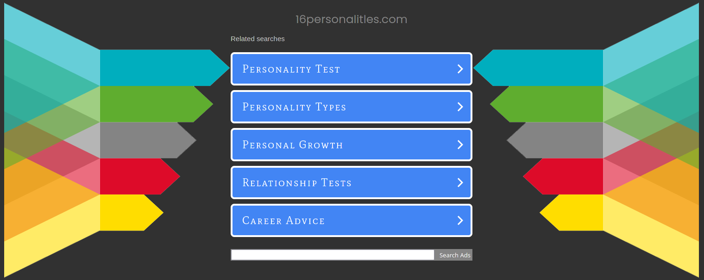

Who am I?: What I've learned from a simple personality test.
Our individual personalities determine one of the most basic factors of our everyday life- communication. We communicate with people even when we don’t realize it. For example, a simple smile when you walk past someone in the grocery store, a wave to a neighbor, or crossing your arms when someone is talking to you can say a lot with just a simple gesture. Interpersonal communication is both verbal and nonverbal and can directly affect how someone else responds to you. A fun and easy way to find out your personality style is by taking a simple online quiz with various statements to which you agree or disagree with HERE . I choose to take the personality quiz for my Interpersonal Communication class, and my results determined that I have an Advocate personality. Knowing and understanding your personality type is the key to mastering your interpersonal communications and being able to tailor your communication to your audience.
While taking my personality quiz I realized that personality tests are not as easy as one might believe. While we as people like to believe the world is seen in black and white, right or wrong, the gray area plays a big role when it comes down to our personal traits. While taking the personality quiz, there were a few statements where I struggled to side with a strong agreement or disagreement due to very little context being revealed to me. This leading to me making a decision to be one or the other based on what I assumed was being described. While this is just a quiz, often in life, we tend to find what is described as a gray area. As we grow as people, the way we approach situations and the views we have of situations can change and adapt to our environments. Can we have more than one determined personality?

Advocates
“Advocates have an inborn sense of idealism and morality, but what sets them apart is that they are not ideal dreamer”. This statement is accurate for my personality because this is one of my biggest strengths. While strong in my morals and personal standards, I am open to seeing both sides of the fence in my relationships. I will defend my stance on things and explain as to why I think the way that I do without pressuring others to feel the same way that I do, but rather see the good and bad in the situation at hand. Having the mental tools to be able to take a stand and advocate for ideas and morals is a major strength not only in my personal life but in my professional life too. In addition, another core strength of the advocate is being inspiring and convincing. “Speaking in human terms, not technical, Advocates have a fluid inspirational writing style that appeals to the inter idealist and their audience”. Advocates can even be astonishingly good orators, speaking in warmth and passion.
“As parents, Advocates will tend to look at their relationships with their children as opportunities to learn and grow with someone they care about. Advocates want to raise children who are ethical, creative, and kind”. I relate to these statements in my personal parenting methods. Having had a child at a young age, I have utilized the opportunity to grow and learn with my child. One of my main focuses in parenting is to teach my child how to be kind to himself and others. “Advocates strive to make sure that their children grow up with a firm understanding of the difference between right and wrong”. Growing up in a culture where learning right from wrong was the heart of our morals, it is important to me as a parent to do the same with my child.
Conclusion
In conclusion, my overall take on this quiz is that it somewhat explained certain specific reasons as to why I make certain decisions in my life. I was able to explore generalized strength and weakness in more detail and understand how it affects my interpersonal communication with other people. However, the quiz itself did not contain enough context to individualize its results.
Although on a broad spectrum I might fall into the category of an Advocate, I feel as if some of the results did not pertain to my personality as a whole. Understanding your personality is the key to mastering your interpersonal communications and being able to tailor your communication to your audience. I believe that the results of this quiz only provide you with general descriptions and characteristics of yourself based on the answers you provide at a specific time and that in itself is subjected to change as you grow.